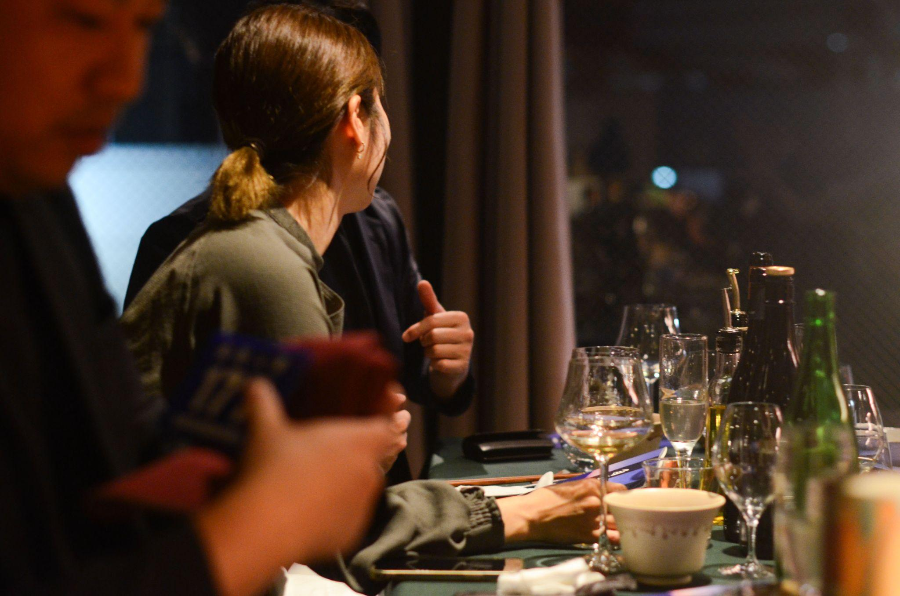
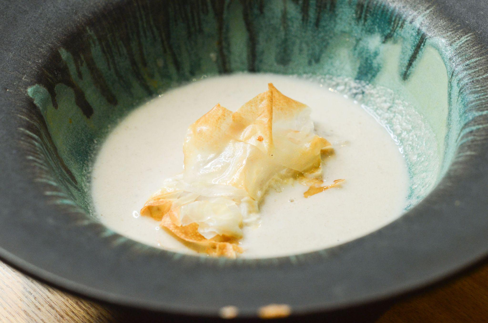
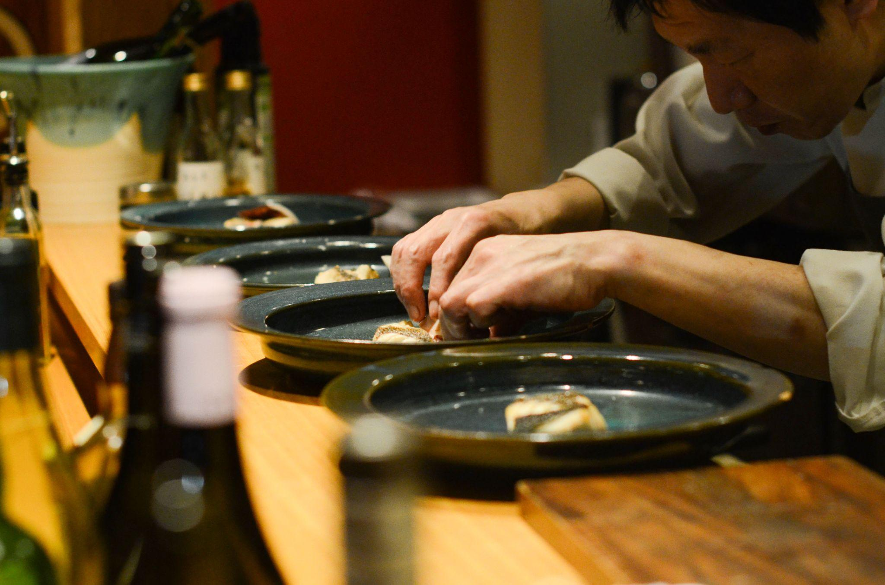

TABLE ARCHIVE / Kyoto · Maizuru × Tokyo · Kagurazaka
The Maizuru and Tango Seafood Table
An evening featuring seafood from Wakasa Bay, with Daiki Kambayashi, a fish wholesaler from Maizuru Port, as our guest. A record of SHIZEN WO SHOKUSU, held in Kagurazaka, Tokyo, on October 14, 2026.
ThemeSeafood from Maizuru and Tango
ProducerDaiki Kambayashi (Maizuru Shokuseikatsu)
Guest chefKeisuke Sugimoto and Kouzou Imai

DOCUMENTARY / Films
A record of the evening.
FILM 01
FILM 02
PHOTOGRAPHY / Images
Moments around the table.




Read the complete article with 19 photographs
Text & Photography: Ichiro Erokumae / Concept: Taku Aoyama / Chefs: Keisuke Sugimoto, Kouzou Imai / Producer Guest: Daiki Kambayashi